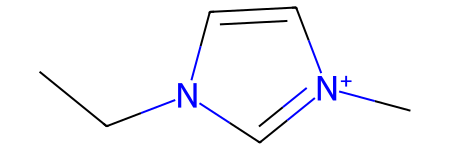
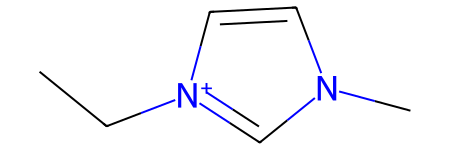

ILThermoPy CookBook
ILThermo 2.0 is the biggest curated database, containing a wide varieties of experimental data on ionic liquids. This cookbook shows how this database can be accessed in automatic mode via the ILThermoPy package.
Basic search
Functionality of ILThermo 2.0 allows one to search experimental data on ionic liquids by the name/CAS RN/chemical formula of compounds, number of components, measured property, and parameters of the source article (for more details see the description of the ilt.Search function):
[1]:
import ilthermopy as ilt
help(ilt.Search)
Help on function Search in module ilthermopy.search:
Search(compound: Optional[str] = None, n_compounds: Literal[None, 1, 2, 3] = None, prop: Optional[str] = None, prop_key: Optional[str] = None, year: Optional[int] = None, author: Optional[str] = None, keywords: Optional[str] = None) -> pandas.core.frame.DataFrame
Runs ILThermo search and returns results as a dataframe
Arguments:
compound: chemical formula, CAS registry number, or name (part or full)
n_compounds: number of mixture compounds
prop: name of physico-chemical property, only used if prop_key is not specified
prop_key: key of physico-chemical property (view available via GetPropertyList)
year: publication year
author: author's last name
keywords: keywords presumably specified in paper's title
Returns:
dataframe containing main info on found entries
[2]:
# search individual compounds published in 2004
df = ilt.Search(n_compounds = 1, year = 2004)
df
[2]:
| id | reference | property | phases | num_phases | num_components | num_data_points | cmp1 | cmp1_id | cmp1_smiles | cmp2 | cmp2_id | cmp2_smiles | cmp3 | cmp3_id | cmp3_smiles | |
|---|---|---|---|---|---|---|---|---|---|---|---|---|---|---|---|---|
| 0 | vffQK | Kabo et al. (2004) | Heat capacity at constant pressure | Liquid | 1 | 1 | 1528 | 1-butyl-3-methylimidazolium hexafluorophosphate | ABChJv | CCCC[n+]1ccn(C)c1.F[P-](F)(F)(F)(F)F | None | None | None | None | None | None |
| 1 | aNLkc | Kabo et al. (2004) | Heat capacity at vapor saturation pressure | Crystal;Gas | 2 | 1 | 137 | 1-butyl-3-methylimidazolium hexafluorophosphate | ABChJv | CCCC[n+]1ccn(C)c1.F[P-](F)(F)(F)(F)F | None | None | None | None | None | None |
| 2 | bNHLG | Kabo et al. (2004) | Heat capacity at vapor saturation pressure | Glass;Gas | 2 | 1 | 111 | 1-butyl-3-methylimidazolium hexafluorophosphate | ABChJv | CCCC[n+]1ccn(C)c1.F[P-](F)(F)(F)(F)F | None | None | None | None | None | None |
| 3 | HzjQF | Sun et al. (2004) | Heat capacity at constant pressure | Crystal | 1 | 1 | 111 | 4,6-dimethyl-N-phenylpyrimidin-2-amine dodecan... | ABYrQW | CCCCCCCCCCCC(=O)[O-].Cc1cc(C)nc(Nc2ccccc2)[nH+]1 | None | None | None | None | None | None |
| 4 | sBpKf | Kabo et al. (2004) | Heat capacity at vapor saturation pressure | Liquid;Gas | 2 | 1 | 42 | 1-butyl-3-methylimidazolium hexafluorophosphate | ABChJv | CCCC[n+]1ccn(C)c1.F[P-](F)(F)(F)(F)F | None | None | None | None | None | None |
| ... | ... | ... | ... | ... | ... | ... | ... | ... | ... | ... | ... | ... | ... | ... | ... | ... |
| 272 | CymfL | Zhao et al. (2004b) | Viscosity | Liquid | 1 | 1 | 1 | 1-(4-cyanobutyl)-3-methylimidazolium tetrafluo... | AAwOgS | Cn1cc[n+](CCCCC#N)c1.F[B-](F)(F)F | None | None | None | None | None | None |
| 273 | onFYh | Zhao et al. (2004b) | Density | Liquid | 1 | 1 | 1 | 1-butyl-3-methylimidazolium hexafluorophosphate | ABChJv | CCCC[n+]1ccn(C)c1.F[P-](F)(F)(F)(F)F | None | None | None | None | None | None |
| 274 | NaZFE | Zhao et al. (2004b) | Viscosity | Liquid | 1 | 1 | 1 | 1-butyl-3-methylimidazolium hexafluorophosphate | ABChJv | CCCC[n+]1ccn(C)c1.F[P-](F)(F)(F)(F)F | None | None | None | None | None | None |
| 275 | YbIco | Zhao et al. (2004b) | Density | Liquid | 1 | 1 | 1 | 1-butyl-3-methylimidazolium tetrafluoroborate | AArYBF | CCCC[n+]1ccn(C)c1.F[B-](F)(F)F | None | None | None | None | None | None |
| 276 | HwTsD | Zhao et al. (2004b) | Equilibrium temperature | Crystal;Liquid | 2 | 1 | 1 | 3-(3-cyanopropyl)-1-methylimidazolium chloride | AAjkls | CCCC[n+]1cccc(C)c1.[Cl-] | None | None | None | None | None | None |
277 rows × 16 columns
Output dataframe contains main information for each found entry, namely:
id: ILThermo entry ID, can be used to retrieve data via
ilt.GetEntryfunction;reference: short notation of the source paper;
property: measured property;
phases: semicolon-separated list of the system’s phases;
num_phases, num_components, num_data_points: number of system’s components and phases, and number of measured data points;
cmp, cmp_id, cmp_smiles: compound name, ILThermo compound ID, and SMILES (all enumerated for compounds #1 - #3).
Property search
To search by property, one need either property name or ILThermo property ID. Since they are internal parameters of the ILThermo 2.0 web interface, they must be obtained via the ilt.ShowPropertyList function:
[3]:
ilt.ShowPropertyList()
# Activity, fugacity, and osmotic properties
BPpY: Activity
VjHv: Osmotic coefficient
# Composition at phase equilibrium
dNip: Composition at phase equilibrium
MbEq: Eutectic composition
lIUh: Henry's Law constant
eCTp: Ostwald coefficient
neae: Tieline
WbZo: Upper consolute composition
# Critical properties
BPNz: Critical pressure
rDNz: Critical temperature
qpSz: Lower consolute temperature
MvMG: Upper consolute pressure
bRXE: Upper consolute temperature
# Excess, partial, and apparent energetic properties
cpbY: Apparent enthalpy
teHk: Apparent molar heat capacity
rTYh: Enthalpy of dilution
aeiA: Enthalpy of mixing of a binary solvent with component
VTiT: Enthalpy of solution
brzp: Excess enthalpy
Sqxi: Partial molar enthalpy
mFmK: Partial molar heat capacity
# Heat capacity and derived properties
tnYd: Enthalpy
kthO: Enthalpy function {H(T)-H(0)}/T
qdUt: Entropy
IZSt: Heat capacity at constant pressure
KvgF: Heat capacity at constant volume
zJIE: Heat capacity at vapor saturation pressure
# Phase transition properties
CXUw: Enthalpy of transition or fusion
iaOF: Enthalpy of vaporization or sublimation
SwyC: Equilibrium pressure
ghKa: Equilibrium temperature
lnrs: Eutectic temperature
LUaF: Monotectic temperature
NmYB: Normal melting temperature
# Refraction, surface tension, and speed of sound
YQDr: Interfacial tension
bNnk: Refractive index
imdq: Relative permittivity
NlQd: Speed of sound
ETUw: Surface tension liquid-gas
# Transport properties
HooV: Binary diffusion coefficient
Ylwl: Electrical conductivity
jjnq: Self diffusion coefficient
pAFI: Thermal conductivity
KTcm: Thermal diffusivity
vBeU: Tracer diffusion coefficient
PusA: Viscosity
# Vapor pressure, boiling temperature, and azeotropic T & P
hkog: Normal boiling temperature
HwfJ: Vapor or sublimation pressure
# Volumetric properties
WxCH: Adiabatic compressibility
zNjL: Apparent molar volume
JkYu: Density
psRu: Excess volume
hXfd: Isobaric coefficient of volume expansion
Bvon: Isothermal compressibility
LNxL: Partial molar volume
If your old code raises ValueError during the property search, this indicates that the property ID and/or property name have changed in ILThermo 2.0 after update(s). In this case, simply correct the value to the actual one.
Retrieving data
To load data on the found entries use the ilt.GetEntry function, which takes entry ID as input:
[4]:
# random search
df = ilt.Search(n_compounds = 2, year = 2004)
# downloading first 10 entries
data = [ilt.GetEntry(idx) for idx in df.id.iloc[:10]]
# get first entry
entry = data[0]
entry
[4]:
Entry(id='srPOo', ref=Reference(full='Rebelo, L. P. N.; Najdanovic-Visak, V.; Visak, Z. P.; Nunes da Ponte, M.; Szydlowski, J.; Cerdeirina, C. A.; Troncoso, J.; Romani, L.; Esperanca, J. M. S. S.; Guedes, H. J. R.; de Sousa, H. C. (2004) Green Chem. 6(8), 369-381.'), property='Excess volume', property_type='Volumetric properties', phases=['Liquid'], components=[Compound(id='AADYJk', name='water', smiles='O'), Compound(id='AArYBF', name='1-butyl-3-methylimidazolium tetrafluoroborate', smiles='CCCC[n+]1ccn(C)c1.F[B-](F)(F)F')], num_data_points=185)
Entry object contains detailed information on the data entry, including:
id: data entry ID;
ref: reference to the source article;
property, property_type: measured property and its type;
phases: list of system’s phases;
components: list of system’s components;
num_phases, num_components, num_data_points: number of system’s components and phases, and number of measured data points;
expmeth: experimental method used to obtain the physchemical data;
solvent: solvent used in the experiment;
constraints: list of experimental constraints;
data: dataframe containing measured data;
header: full column names to the data, containing info on the measured property, measurement units, component, and phase;
footnotes: notes to the data;
response: original response.
Let’s illustrate the main attributes. Reference contains reference itself and the article’s title:
[5]:
entry.ref.full, entry.ref.title
[5]:
('Rebelo, L. P. N.; Najdanovic-Visak, V.; Visak, Z. P.; Nunes da Ponte, M.; Szydlowski, J.; Cerdeirina, C. A.; Troncoso, J.; Romani, L.; Esperanca, J. M. S. S.; Guedes, H. J. R.; de Sousa, H. C. (2004) Green Chem. 6(8), 369-381.',
'A detailed thermodynamic analysis of [C4mim][BF4] + water as a case study to model ionic liquid aqueous solutions')
Each component is a Compound object and contains the following fields:
id: compound id;
name: compound name;
formula: chemical formula;
smiles: compound SMILES;
smiles_error: if compounds SMILES was not retrieved, this field describes the reason;
sample: dictionary containing info on compound’s source, purity, etc.;
mw: molar weight of the compound, g/mol.
[6]:
cmp1 = entry.components[0]
cmp1.id, cmp1.name, cmp1.formula, cmp1.smiles, cmp1.smiles_error, cmp1.sample, cmp1.mw
[6]:
('AADYJk',
'water',
'H2 O',
'O',
None,
{'Source': 'commercial source',
'Purification': 'estimated by the compiler',
'Purity': '99.8 mass %(fractional distillation)'},
18.02)
data field contains dataframe with measured physchemical data. Its columns has short names V1, V2, V3, etc. for all variables. If for some variable the measurement error was provided, the corresponding column will be d concatanated to the column name of the original value, e.g. V1 and dV1:
[7]:
entry.data
[7]:
| V1 | V2 | V3 | V4 | dV4 | |
|---|---|---|---|---|---|
| 0 | 100.0 | 0.0040 | 278.15 | -3.600000e-08 | 1.000000e-08 |
| 1 | 100.0 | 0.0040 | 283.15 | -3.350000e-08 | 1.000000e-08 |
| 2 | 100.0 | 0.0040 | 288.15 | -3.070000e-08 | 1.000000e-08 |
| 3 | 100.0 | 0.0040 | 293.15 | -2.830000e-08 | 1.000000e-08 |
| 4 | 100.0 | 0.0040 | 298.15 | -2.580000e-08 | 1.000000e-08 |
| ... | ... | ... | ... | ... | ... |
| 180 | 60000.0 | 0.5905 | 298.15 | 4.620000e-07 | 1.100000e-08 |
| 181 | 60000.0 | 0.5905 | 303.15 | 4.550000e-07 | 1.100000e-08 |
| 182 | 60000.0 | 0.5905 | 313.15 | 4.510000e-07 | 1.100000e-08 |
| 183 | 60000.0 | 0.5905 | 323.15 | 5.420000e-07 | 1.200000e-08 |
| 184 | 60000.0 | 0.5905 | 333.15 | 5.830000e-07 | 1.200000e-08 |
185 rows × 5 columns
header field contains full names of the corresponding columns, including measured property, its measurement unit, and optionally compound and phase:
[8]:
entry.header
[8]:
{'V1': 'Pressure, kPa',
'V2': 'Mole fraction of 1-butyl-3-methylimidazolium tetrafluoroborate => Liquid',
'V3': 'Temperature, K',
'V4': 'Excess volume, m<SUP>3</SUP>/mol => Liquid',
'dV4': 'Error of excess volume, m<SUP>3</SUP>/mol => Liquid'}
Combining data entries formatted in this way is possible, albeit difficult. However, that is a problem of a particular database, and such a task is beyound the scope of this API.
Substructure search
Update status
Structural information of the ILThermo compounds is a crucial part of ilthermopy. This information is stored in a table format, linking together ILThermo compound ID, compound name, and verified SMILES string. ilthermopy usually uses compound IDs to retrieve SMILES, however each update of the ILThermo 2.0 database changes all compound IDs. In this case ilthermopy still can retrieve SMILES using compound name, however, that is not a full-proof way and some SMILES can be missing.
Therefore, it is a good idea to check if ilthermopy is up-to-date before you start exploring ILThermo database:
[9]:
ilt.CheckLastUpdate()
ILThermo 2.0 database was last updated on June 04, 2024
ilthermopy package was last updated on September 07, 2024
ilthermopy package is up-to-date
Substructure search
The easiest way to search by substructure is to filter all available compounds, and than filter the search output by compound IDs or compound names (if ilthermopy is not up-to-date). Imagine that we want to get all entries containing guanidinium cation. In this case we start with loading preliminary info on all abailable ILThermo entries:
[10]:
df = ilt.GetAllEntries()
df
[10]:
| id | reference | property | phases | num_phases | num_components | num_data_points | cmp1 | cmp1_id | cmp1_smiles | cmp2 | cmp2_id | cmp2_smiles | cmp3 | cmp3_id | cmp3_smiles | |
|---|---|---|---|---|---|---|---|---|---|---|---|---|---|---|---|---|
| 0 | vffQK | Kabo et al. (2004) | Heat capacity at constant pressure | Liquid | 1 | 1 | 1528 | 1-butyl-3-methylimidazolium hexafluorophosphate | ABChJv | CCCC[n+]1ccn(C)c1.F[P-](F)(F)(F)(F)F | None | None | None | None | None | None |
| 1 | cFdQS | Strechan et al. (2008a) | Heat capacity at vapor saturation pressure | Crystal 2;Gas | 2 | 1 | 613 | 1-butyl-3-methylimidazolium trifluoroacetate | AAwaEi | CCCC[n+]1ccn(C)c1.O=C([O-])C(F)(F)F | None | None | None | None | None | None |
| 2 | eOKLZ | Safarov et al. (2021b) | Viscosity | Liquid | 1 | 1 | 500 | 1-ethyl-3-methylimidazolium dicyanamide | AAiEIE | CC[n+]1ccn(C)c1.N#C[N-]C#N | None | None | None | None | None | None |
| 3 | UkHsx | Polikhronidi et al. (2014) | Heat capacity at constant pressure | Liquid | 1 | 1 | 422 | 1-hexyl-3-methylimidazolium bis[(trifluorometh... | ABiCtA | CCCCCC[n+]1ccn(C)c1.O=S(=O)([N-]S(=O)(=O)C(F)(... | None | None | None | None | None | None |
| 4 | BvazU | Safarov et al. (2018c) | Viscosity | Liquid | 1 | 1 | 394 | 1-octyl-3-methylimidazolium hexafluorophosphate | ABNWoR | CCCCCCCC[n+]1ccn(C)c1.F[P-](F)(F)(F)(F)F | None | None | None | None | None | None |
| ... | ... | ... | ... | ... | ... | ... | ... | ... | ... | ... | ... | ... | ... | ... | ... | ... |
| 54204 | kxodn | Zhao et al. (2010a) | Composition at phase equilibrium | Liquid;Gas | 2 | 3 | 1 | carbon dioxide | AAIYzl | O=C=O | water | AADYJk | O | 2-hydroxy-N-(2-hydroxyethyl)-N-methylethanamin... | AAdwMT | C[NH+](CCO)CCO.[Cl-] |
| 54205 | WDULW | Zhao et al. (2010a) | Composition at phase equilibrium | Liquid;Gas | 2 | 3 | 1 | carbon dioxide | AAIYzl | O=C=O | water | AADYJk | O | 2-hydroxy-N-(2-hydroxyethyl)-N-methylethanamin... | AAnpCD | C[NH+](CCO)CCO.F[B-](F)(F)F |
| 54206 | trauR | Zhao et al. (2010a) | Composition at phase equilibrium | Liquid;Gas | 2 | 3 | 1 | carbon dioxide | AAIYzl | O=C=O | water | AADYJk | O | 2-hydroxyethanaminium tetrafluoroborate | AAcgPC | F[B-](F)(F)F.[NH3+]CCO |
| 54207 | YtOdr | Zhao et al. (2010a) | Composition at phase equilibrium | Liquid;Gas | 2 | 3 | 1 | carbon dioxide | AAIYzl | O=C=O | water | AADYJk | O | 1-butyl-3-methylimidazolium tetrafluoroborate | AArYBF | CCCC[n+]1ccn(C)c1.F[B-](F)(F)F |
| 54208 | xKyGC | Zhao et al. (2010a) | Composition at phase equilibrium | Liquid;Gas | 2 | 3 | 1 | triethanolamine | AAcjhv | OCCN(CCO)CCO | carbon dioxide | AAIYzl | O=C=O | 1-butyl-3-methylimidazolium tetrafluoroborate | AArYBF | CCCC[n+]1ccn(C)c1.F[B-](F)(F)F |
54209 rows × 16 columns
Next we get pre-stored list of all ILThermo compounds:
[11]:
cmps = ilt.GetSavedCompounds().data
cmps
[11]:
| id | name | smiles | |
|---|---|---|---|
| 0 | AAAUum | hydrogen (normal) | [HH] |
| 1 | AAAomx | helium | [He] |
| 2 | AADEIK | methane | C |
| 3 | AADOkx | ammonia | N |
| 4 | AADYJk | water | O |
| ... | ... | ... | ... |
| 4110 | AFHNfv | 1,3-bis(3-((3,3,4,4,5,5,6,6,7,7,8,8,9,9,10,10,... | FC(F)(F)C(F)(F)C(F)(F)C(F)(F)C(F)(F)C(F)(F)C(F... |
| 4111 | AFSFfi | 3,3',3''-((propane-1,2,3-triyltris(oxy))tris(m... | O=S(=O)([N-]S(=O)(=O)C(F)(F)F)C(F)(F)F.O=S(=O)... |
| 4112 | AFmxJi | 3,3',3''-((propane-1,2,3-triyltris(oxy))tris(m... | CCCCCCCC[n+]1ccn(COCC(COCn2cc[n+](CCCCCCCC)c2C... |
| 4113 | AGbVrm | 1,1'-(ethane-1,2-diyl)bis(3-(3-((3,3,4,4,5,5,6... | FC(F)(F)C(F)(F)C(F)(F)C(F)(F)C(F)(F)C(F)(F)C(F... |
| 4114 | AGwzVJ | 1,1'-(decane-1,10-diyl)bis(3-(3-((3,3,4,4,5,5,... | FC(F)(F)C(F)(F)C(F)(F)C(F)(F)C(F)(F)C(F)(F)C(F... |
4115 rows × 3 columns
And filter them with RDKit package using a substucture search:
[12]:
from rdkit import Chem
from rdkit import RDLogger
RDLogger.DisableLog('rdApp.*') # hides warnings
mols = [Chem.MolFromSmiles(smi) for smi in cmps.smiles]
pat = Chem.MolFromSmarts('[NX3;H2]~[CX3](~[NX3;H2])~[NX3;H2]')
cmps = cmps.loc[[m.HasSubstructMatch(pat) for m in mols]]
cmps
[12]:
| id | name | smiles | |
|---|---|---|---|
| 595 | AAavNv | Guanidinium bromide | NC(N)=[NH2+].[Br-] |
| 1159 | AAoLEA | guanidinium trifluoromethanesulfonate | NC(N)=[NH2+].O=S(=O)([O-])C(F)(F)F |
| 1243 | AApejX | guanidinium sulfate | NC(N)=[NH2+].NC(N)=[NH2+].O=S(=O)([O-])[O-] |
| 2728 | ABUxBz | guanidinium tetraphenylborate | NC(N)=[NH2+].c1ccc([B-](c2ccccc2)(c2ccccc2)c2c... |
| 3923 | ACTsEp | guanidinium bis(bis(perfluoroethyl)phosphoryl)... | NC(N)=[NH2+].O=P([N-]P(=O)(C(F)(F)C(F)(F)F)C(F... |
Now we can use obtained compound IDs to filter the search data:
[13]:
sub = df.loc[df.cmp1_id.isin(cmps.id) | df.cmp2_id.isin(cmps.id) | df.cmp3_id.isin(cmps.id)]
sub
[13]:
| id | reference | property | phases | num_phases | num_components | num_data_points | cmp1 | cmp1_id | cmp1_smiles | cmp2 | cmp2_id | cmp2_smiles | cmp3 | cmp3_id | cmp3_smiles | |
|---|---|---|---|---|---|---|---|---|---|---|---|---|---|---|---|---|
| 22465 | FTOEm | Kumar (2007) | Osmotic coefficient | Liquid;Gas | 2 | 2 | 28 | tetramethylammonium chloride | AAVDUE | C[N+](C)(C)C.[Cl-] | guanidinium sulfate | AApejX | NC(N)=[NH2+].NC(N)=[NH2+].O=S(=O)([O-])[O-] | None | None | None |
| 22503 | eBeqe | Sairi et al. (2015) | Viscosity | Liquid | 1 | 2 | 28 | water | AADYJk | O | guanidinium trifluoromethanesulfonate | AAoLEA | NC(N)=[NH2+].O=S(=O)([O-])C(F)(F)F | None | None | None |
| 23959 | KDBmV | Sairi et al. (2015) | Density | Liquid | 1 | 2 | 18 | water | AADYJk | O | guanidinium trifluoromethanesulfonate | AAoLEA | NC(N)=[NH2+].O=S(=O)([O-])C(F)(F)F | None | None | None |
| 24985 | vQDiO | Kumar (2001) | Density | Liquid | 1 | 2 | 14 | water | AADYJk | O | Guanidinium bromide | AAavNv | NC(N)=[NH2+].[Br-] | None | None | None |
| 24986 | MNutD | Kumar (2001) | Speed of sound | Liquid | 1 | 2 | 14 | water | AADYJk | O | Guanidinium bromide | AAavNv | NC(N)=[NH2+].[Br-] | None | None | None |
| 25429 | jASaU | Kumar (2001) | Speed of sound | Liquid | 1 | 2 | 13 | guanidinium sulfate | AApejX | NC(N)=[NH2+].NC(N)=[NH2+].O=S(=O)([O-])[O-] | water | AADYJk | O | None | None | None |
| 25430 | kKajm | Kumar (2001) | Density | Liquid | 1 | 2 | 13 | guanidinium sulfate | AApejX | NC(N)=[NH2+].NC(N)=[NH2+].O=S(=O)([O-])[O-] | water | AADYJk | O | None | None | None |
| 45701 | MhEvz | Ondo and Dohnal (2014) | Composition at phase equilibrium | Liquid;Crystal of intercomponent compound 1 | 2 | 2 | 1 | water | AADYJk | O | guanidinium tetraphenylborate | ABUxBz | NC(N)=[NH2+].c1ccc([B-](c2ccccc2)(c2ccccc2)c2c... | None | None | None |
| 45702 | BVhqX | Ondo and Dohnal (2014) | Composition at phase equilibrium | Liquid;Crystal of pure component 2 | 2 | 2 | 1 | water | AADYJk | O | guanidinium bis(bis(perfluoroethyl)phosphoryl)... | ACTsEp | NC(N)=[NH2+].O=P([N-]P(=O)(C(F)(F)C(F)(F)F)C(F... | None | None | None |
| 45709 | hRmeZ | Ondo and Dohnal (2014) | Apparent enthalpy | Liquid | 1 | 2 | 1 | water | AADYJk | O | guanidinium tetraphenylborate | ABUxBz | NC(N)=[NH2+].c1ccc([B-](c2ccccc2)(c2ccccc2)c2c... | None | None | None |
| 45710 | arrKj | Ondo and Dohnal (2014) | Apparent enthalpy | Liquid | 1 | 2 | 1 | water | AADYJk | O | guanidinium bis(bis(perfluoroethyl)phosphoryl)... | ACTsEp | NC(N)=[NH2+].O=P([N-]P(=O)(C(F)(F)C(F)(F)F)C(F... | None | None | None |
| 47776 | aWGeF | Sairi et al. (2015) | Density | Liquid | 1 | 3 | 81 | N-methyldiethanolamine | AAWveB | CN(CCO)CCO | water | AADYJk | O | guanidinium trifluoromethanesulfonate | AAoLEA | NC(N)=[NH2+].O=S(=O)([O-])C(F)(F)F |
| 48534 | woUWv | Sairi et al. (2015) | Viscosity | Liquid | 1 | 3 | 48 | N-methyldiethanolamine | AAWveB | CN(CCO)CCO | water | AADYJk | O | guanidinium trifluoromethanesulfonate | AAoLEA | NC(N)=[NH2+].O=S(=O)([O-])C(F)(F)F |
| 50285 | zoJjS | Sairi et al. (2011) | Composition at phase equilibrium | Liquid;Gas | 2 | 3 | 18 | carbon dioxide | AAIYzl | O=C=O | water | AADYJk | O | guanidinium trifluoromethanesulfonate | AAoLEA | NC(N)=[NH2+].O=S(=O)([O-])C(F)(F)F |
| 52324 | tmQgx | Sairi et al. (2015) | Composition at phase equilibrium | Liquid;Gas | 2 | 3 | 6 | carbon dioxide | AAIYzl | O=C=O | water | AADYJk | O | guanidinium trifluoromethanesulfonate | AAoLEA | NC(N)=[NH2+].O=S(=O)([O-])C(F)(F)F |
Resonance
Sometimes, substructure search will not work as expected unless resonance was considered. This can be demonstrated on non-symmetrical imidazolium cations:
[14]:
mol1 = Chem.MolFromSmiles('C[n+]1cc[n](CC)c1')
mol2 = Chem.MolFromSmiles('C[n]1cc[n+](CC)c1')
mol1
[14]:

[15]:
mol2
[15]:

[16]:
mol1.HasSubstructMatch(mol2)
[16]:
False
Despite the fact that both molecules are equivalent, their graph representation is not, and current SMILES normalization (as implemented in RDKit) does not change that:
[17]:
Chem.MolToSmiles(mol1), Chem.MolToSmiles(mol2)
[17]:
('CCn1cc[n+](C)c1', 'CC[n+]1ccn(C)c1')
This problem can be adressed in two ways: